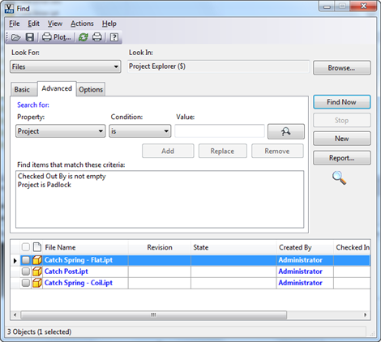

by Doug Redmond, It's All Just Ones and Zeros
09/14/2012
This article explains how to use the Find X By Search Conditions functions. These Find functions are the API equivalent of the Advanced Find command in the UI. Hopefully you are familiar with the following dialog.

The basic idea is that you construct your search criteria by chaining together a bunch of search conditions. The result set consists of all the entities that match the search conditions.
The results are returned in pages for performance reasons. By default, 100 is the page size, but that value can be changed in ADMS Console. You can also define sort criteria, so that the results come back in a specific order. That way you can hopefully get what you want on the first page.
Each major entity type has it’s own set of Find by Search Conditions functions, but they all work basically the same. I will be focusing mainly on FindFilesBySearchConditions for this article.
Sample code
I’ll start by showing the code, then explaining what is going on.
|
// C# PropDef [] filePropDefs = m_svcMgr.PropertyService.GetPropertyDefinitionsByEntityClassId("FILE"); PropDef checkedOutPropDef = filePropDefs.Single(n => n.SysName == "CheckoutUserName"); PropDef projectPropDef = filePropDefs.Single(n => n.SysName == "Project");
SrchCond isCheckedOut = new SrchCond() { PropDefId = checkedOutPropDef.Id, PropTyp = PropertySearchType.SingleProperty, SrchOper = 5, // is not empty SrchRule = SearchRuleType.Must, };
SrchCond padlockProject = new SrchCond() { PropDefId = projectPropDef.Id, PropTyp = PropertySearchType.SingleProperty, SrchOper = 3, // is equal SrchRule = SearchRuleType.Must, SrchTxt = "Padlock" };
string bookmark = string.Empty; SrchStatus status = null; List<File> totalResults = new List<File>(); while (status == null || totalResults.Count < status.TotalHits) { File [] results = m_svcMgr.DocumentService.FindFilesBySearchConditions( new SrchCond[] { isCheckedOut, padlockProject }, null, null, false, true, ref bookmark, out status);
if (results != null) totalResults.AddRange(results); else break; } // total results now has the results |
|
' VB.NET Dim filePropDefs As PropDef() = _ m_svcMgr.PropertyService.GetPropertyDefinitionsByEntityClassId("FILE") Dim checkedOutPropDef As PropDef = _ filePropDefs.[Single](Function(n) n.SysName = "CheckoutUserName") Dim projectPropDef As PropDef = _ filePropDefs.[Single](Function(n) n.SysName = "Project")
' SrchOper 5 => is not empty Dim isCheckedOut As New SrchCond() With { _ .PropDefId = checkedOutPropDef.Id, _ .PropTyp = PropertySearchType.SingleProperty, _ .SrchOper = 5, _ .SrchRule = SearchRuleType.Must _ }
' SrchOper 3 => equals Dim padlockProject As New SrchCond() With { _ .PropDefId = projectPropDef.Id, _ .PropTyp = PropertySearchType.SingleProperty, _ .SrchOper = 3, _ .SrchRule = SearchRuleType.Must, _ .SrchTxt = "Padlock" _ }
Dim bookmark As String = String.Empty Dim status As SrchStatus = Nothing Dim totalResults As New List(Of File)() While status Is Nothing OrElse totalResults.Count < status.TotalHits Dim results As File() = _ m_svcMgr.DocumentService.FindFilesBySearchConditions( _ New SrchCond() {isCheckedOut, padlockProject}, _ Nothing, Nothing, False, True, bookmark, _ status)
If results IsNot Nothing Then totalResults.AddRange(results) Else Exit While End If End While ' total results now has the results |
The code is running the same search from the screenshot at the top of the article. In this case, I want to gather all results, even if it’s bigger than the page size. I put the Find call in a while loop so that I can keep going, page by page, until I get all the results.
Search Conditions
The SrchCond objects are the main building blocks of your search. Each object defines a single condition in the search. A condition consists of a property, a condition and a value. For example, “Author is Doug” or “CreateDate is less than 6/31/2011”. Value may not be used in some cases depending on the condition. For example, “Checked Out By is not empty”.
The PropTyp property basically determines if this is an advanced search or a basic search. “SingleProperty” means advanced search because the value only relates to a single property. “AllProperties” and “AllPropertiesAndContent” both refer to the basic search feature where a single value is compared against all properties.
SrchOper defines the comparison operator, such as “equals” or “less than”. It’s a number, and the SDK documentation has a table of all the legal values.
Search Rule is something I covered in another article, so I won’t go over it here. The advanced find command in the Vault client always uses Must, which means there is an AND relationship between the conditions.
FindFilesBySearchConditions
Here is the function itself. I won’t be going over every parameter, but I will make sure to cover the tricky ones.
File[] FindFilesBySearchConditions(
SrchCond[] conditions,
SrchSort[] sortConditions,
long[] folderIds,
bool recurseFolders,
bool latestOnly,
ref System.string bookmark,
out SrchStatus searchstatus
)
The first parameter is the array of search conditions. You can pass in an empty array, which results in all Files being returned. It’s actually the most efficient way to scan through all the files in the Vault.
Next is the array of sort objects. You can pass in null if you don’t care about the order. If you do want a sort, the SrchSort class is pretty straightforward. It’s a Vault property you want to sort on, and you can have it be ascending or descending. The input is an array so that you can sort across multiple properties. The first object in the array is a primary sort, the second object is the secondary sort, and so on.
FolderIds is for cases where you want to search in a specific set of folders. If you want to search the whole Vault, pass in null. Passing in the root folder may slow performance.
Bookmark is for when you need multiple pages returned. The first time you call Find, you pass in an empty string for the bookmark. If you don’t get all the results in the first call, bookmark will get updated. You can then use the bookmark for the next call and it will continue the search from where the last search left off.
Search Status lets you know how many total results there are. It also lets you know if a re-index is going on. In the event of a re-index, your results may not be 100% accurate. There is not much you can do in this case aside from warning the user.